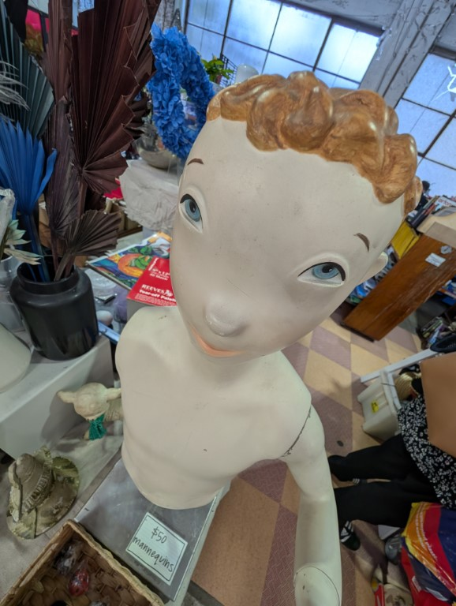

Gooday friends, as i write this i am sitting outside in my big comfy chair on the balcony, i just watched the new only murders in the building (mreyl streep is a fucking powerhouse in evertyhing she was so good in devil wears prada) and the weather is just so nice, it snot cold its not warm its just lovely. And as i look around i am wondering why i don't do this more often (The answer is that i get bitten alive, i can already see the bugs swirling) anyway september! 9/11 happened and it was also my brothers birthday (i got him a CD player and an leather notebook i wouldve gone for the dumb AI hardware but the humane pins are still super expensive and the rabbit still isnt funny enough to buy for a shitty android phone) but here we are barrelling into october.
The month started off with the lovely friend Mae coming to visit for a few nights, we went into the city and i saw this fella on a screen and lost my shit (i later found all of these fellas on the transport nsw’s website and god its good)

Saw this mannequin at reverse garbage and calling it a mannequin and not the creature feels disingenuous.
Saw Aunty donna
They were real good (they kept trying to tell the audience “don't get up and shout pud at us” because there was a real bad time at one of their last sydney shows)
Sitting front row ruled
Saw a stool that was bees outside manly library, was scary to walk past ngl
Got dressed up to play poker - didnt commit hard enough ngl need to get a tophat
Had dinner at my parents for my brothers birthday and panicked thinking that i should be an adult and bring something, we ended up having takeout so me making and then bringing an potato bake was dumb. What was also dumb was me putting the small milk bottle of cream into the woolies chiller bag because it spilt all through the bag and also all through my fucking car and stunk so bad.
Ok the one thing that got me was this, its a list of suburbs with latitudes and longatudes (half cutt off sorry) but i had a real autism moment and placed them all on a map. Half of them are very very wrong (like in the ocean wrong) and half are correct? Very confusing also why this is supposed to be the haul of an truck and that route makes no sense. Oh also one of the lats&longs is in melbourne lmao https://www.google.com/maps/d/viewer?hl=en&mid=11GCUMPS80wXX0OX4aw9cMtQ3LCGbZNc&ll=-35.63395306764927%2C148.30076389999996&z=8
This memory came to me the other night as i heard tell of a engagement party from hell for a wedding thats not happening for another 600 days but a few years ago my dear friend Emily (venn) got married, it was lovely yada yada yada but i remember (ok now emily this is not a slight against lachie in any way i just realised youd read this) that his siblings gave a speech and as did hers. His siblings told cute stories about them playing pokemon and other thing (pokemon is the only thing i remember really) and it was like the two younger siblings being like “aw big brother”. Then Emilys sister jess gets up. And at this point during the night i was double fisting vodka lemonades because i was assured there was going to be a cider available for free (this was later swapped out for another bear the uncles could not agree upon the beers that they liked - i hold no ill will against you emily but the uncles are on watch) and i suddenly remembered that jess had messaged me like 2 weeks prior to ask about my list. Now ive known emily since highschool when we became friends during DesignTechnology where we learned how to draw engineering things and OK FUCK I JUST REMMEBERED THAT I CAME THIRD OH MAN. ok calming down.
The story there is that it was me, emily and musashi all were tied for first (the teacher told us so) and the fucker put the woman #1 and the asian guy #2 and left me (white guy) to be third god damn it.
Anyway the list, ive been keeping a list since i met emily in year 9 telling tales about all the dumb things shes done. Ive had other people seek me out to report things that have occurred which are list worthy and i always promised emily that the list was only for me and that id never share it. However when i got the message from her sister i sent it without hesitation instantly. I believe that jess’s speech started with “emily youre great but your friends keep a list” and then i got death stared by the bride (a crazy thing to happen at a wedding) and then jess’s speech was just a roast of emily for a solid 5 minutes by reading out the many many dumb things shes done.
Anyway the next wedding i went to i drunkenly stopped the father of the groom from giving a speech by man handling him what the fuck was i on. Oh alchol
I made this github page that loads a random story from the age where the boomers complain about traveling, its fucking wild and so many of them are like “What? Its the 21st century ffs” https://pantsmaners.github.io/boomers-flying/
So, what now? The sands of time continue to slip through the hourglass. Ive started trying to actively write down an lil idea ive had for a scifi story but so far instead of actually writing anything about the sotry down all ive done is write pages of notes and doodles of what the ship could look like. Anyway im feeling actually sentimental so i wont end with a dumb picture of shrek or the cat in the hat or sonic the hedgehog or whatever i just type into google but instead with this picture. Its technically the oldest pic i have on my google photos (dated from the 70s) and i just think its nice (i think its my uncle but my mum is yet to confirm) the reason i feel like ending with this is the other night i randomly opened a video called “final render v3.mp4” on my desktop only to find it was the slideshow i made for my grandfathers funeral and it got me good and i just feel like sharing nice thing anyway fuck off